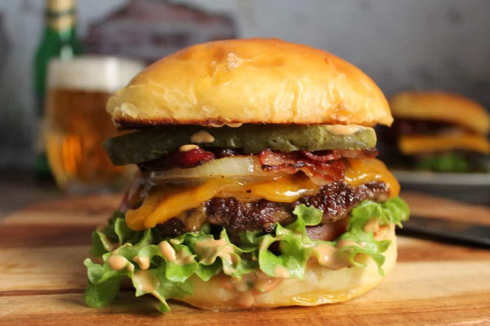

Domáci hamburger

Popis
Hamburger je jedna z tých dobrôt, ktorú si všetci radi vychutnáme v
reštaurácii a niekedy i vo fast foodoch. Pripravený burger doma však chutí
naozaj najlepšie. Ak je spravený tak, ako má byť. A navyše viete, čo
všetko sa vo vašom hamburgeri nachádza.
Existuje niekto, kto nemá rád klasický šťavnatý burger? Asi áno, ale
väčšina z nás si na ňom neraz veľmi pochutí. Burger, to je výborné mäso,
fajnový dresing, čerstvá zelenina a skvelá žemľa. A práve žemľa je pri
tomto recepte to, čo posúva tento burger na iný level.
Na 3 burgre potrebujeme
- 450g hovädzie mäso (80% chudé, 20% tučné)
- 1 žĺtok
- 1 PL worcestrovej omáčky
- 3 žemle (domáce)
- 6 šalátových listov
- 3 hrubé plátky cibule
- 6 plátkov slaniny
- 3 hrubé plátky rajčiny
- 3 plátky syra (čedar)
- 6 plátkov zaváranej uhorky
- Soľ a čierne korenie podľa chuti
Postup
-
Mäso môžete pripraviť už hodinu (alebo i dlhšie) pred varením. Zmiešajte
mleté hovädzie mäso s worcestrovou omáčkou, vytvarujte do placiek a
vložte do chladničky.
-
Dôležité je všetko si vopred nachystať, pretože burger je hotový rýchlo.
Vytiahnite mäsové placky z chladničky, osoľte a okoreňte z každej
strany. Nakrájajte cibuľu, rajčinu a zaváranú uhorku na hrubšie plátky.
Umyte šalát a nechajte ho odkvapkať.
-
Pripravte si taktiež dresing zmiešaním potrebných ingrediencií uvedených
vyššie.
-
Majte prichystané dve panvice. V jednej opečte mäso a v druhej žemle,
slaninu a cibuľu. Ak máte k dispozícii gril, samozrejme ho môžete
použiť.
-
Mäso smažte z každej strany približne 4 minúty. Čas môžete prispôsobiť
podľa toho, aký stupeň prepečenia máte radi. Otočte mäso iba raz a hneď
po otočení položte naňho syr.
-
No a na záver už len dajte dokopy všetky suroviny, v tomto poradí:
žemľa, dresing, šalát, rajčina, mäso, syr, cibuľka, slanina, uhorka,
dresing, žemľa.